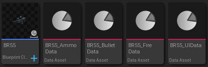
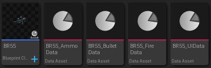
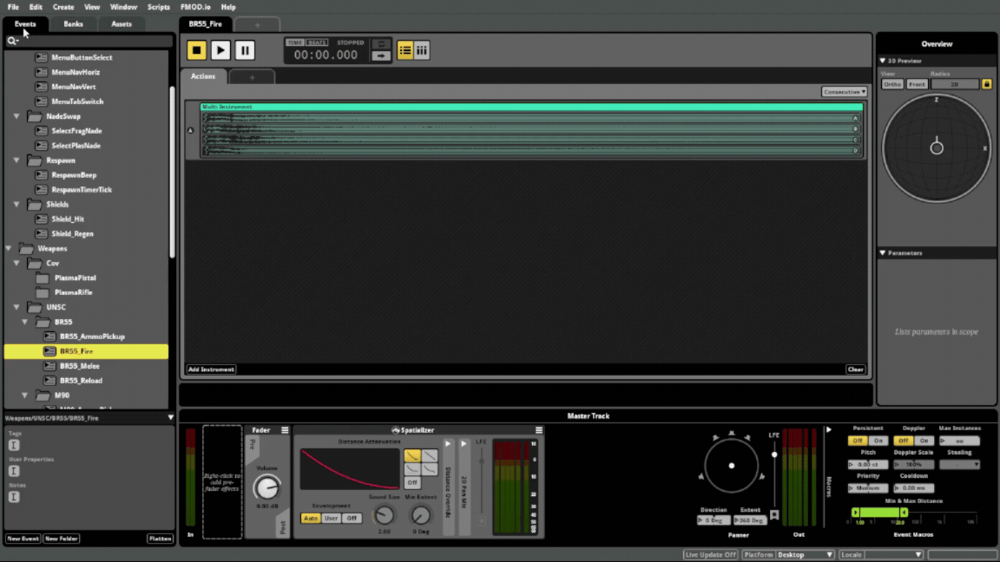
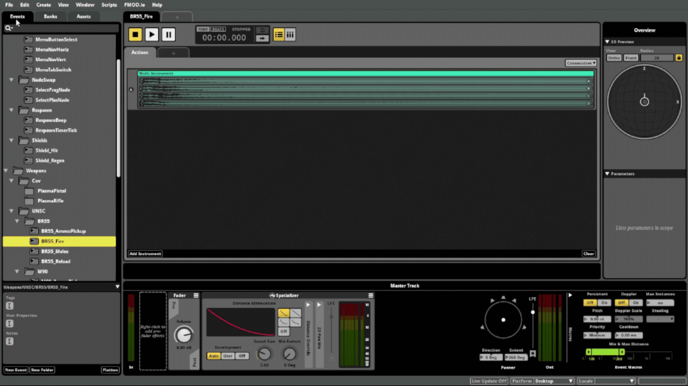

Recent Posts
10/11
Not too much "new" progress but a lot of important work was done. Looking at how the weapons system worked, it was ok but pretty hacky and not very modular. If another programmer were to try and expand on it, it would be pretty hard. I realized that when I tried to expand on it to make charge weapons.
So this week I rebuilt the ENTIRE system from the ground up. Weapons now can be created by making a blueprint and just assiging specialized data that any old designer can create and define in engine, allowing anyone to build an entire arsenal of weapons without needing to code a single thing.
I then added some ik rigging behavior to characters so that they look at where they're aiming and can look left and right for a bit before their body turns. At the end of the day it really was just prep work for having the AI use weapons.
 

10/3
While I wasn't able to work on my MFA project this week, I spent a lot of time on another project learning about integrating systems into unreal engine and different kinds of pathfinding then are used in most games.
This other project is a large world (or rather universe?) scifi aerospace shooter. As such, common and traditional pathfinding methods such as navmeshes and A* aren't really viable. After experimenting with different systems, I found the best way (for our game)
to implement 3D pathfinding for space ships was to create a heavily modified Rapidly Expanding Random Tree (RRT). The version I created differs from the traditional by building bidirectionally from the start and end points, building with a bias towards a direction and utilizing
node costs to prioritize, shorten and optimize paths. This allows it to remain lightweight while becoming far more predictable and direct. I then learned about subsystems and blueprint function libraries to seamlessly add this pathfinding system into unreal engine to be used anywhere. All around just some pretty cool stuffs.


9/26
Lot of learning done this week. Set up and implemented FMOD into the project. Also set up common ui into the project for easier controller integration.
Not a very fun thing to learn and implement but you can't argue with the results. Also learned a bit more about creating custom tasks and
path building with navmeshes to create more controllable movement.
 

9/20
This week I worked on creating a firing range level, doubling as both a player and dev testing environment. The dummies on the range can be given different behaviors like hide from player or random movement to allow the player to practice their aim.
Aditionally I have continued to create and expand core game mechanics like energy shield vfx, respawn system, etc.


9/10
First blog post. This week I started setting up the first project I plan to work on during my time as an MFA student. The project is a fps scifi shooter and halo fan project. The reason for making such a game is
that I wanted to learn more about behavior trees (the ai used in the Halo games), single/multiplayer fps mechanics, unreal engine 5 as I have not used it before and model rigging / animating. Below is the progress made this week setting up the base of the project.